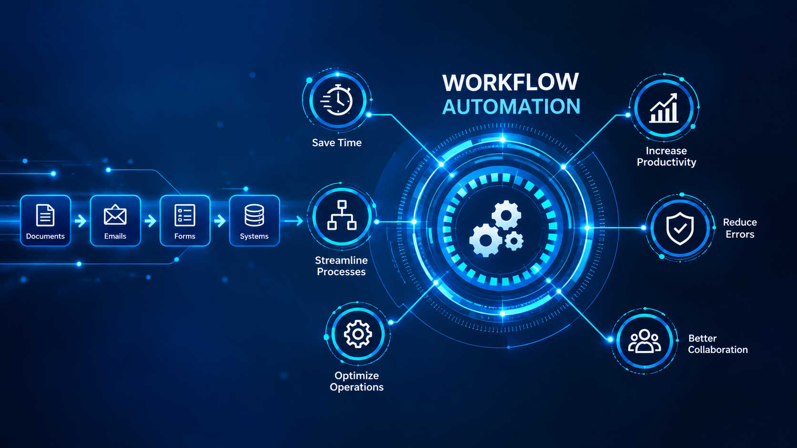
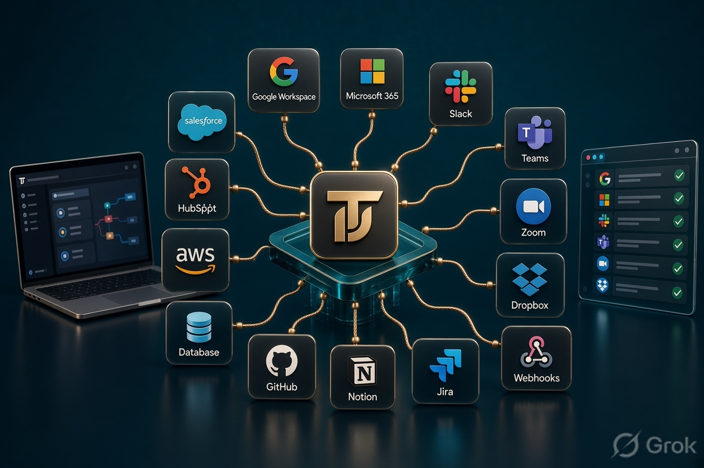
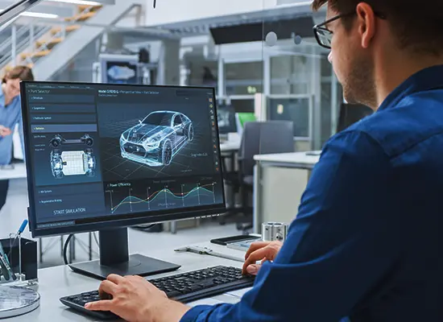

01
Workflow Automation
Automate repetitive business processes and approvals.
If your team is still moving data between spreadsheets, emails, forms and systems manually, there is probably a better way.
Turtix helps businesses identify repetitive work and automate the workflows behind it.
A few minutes here. A spreadsheet there. One person checking another person's work.
Over time, these become operational costs, delays and avoidable errors. We look at how work actually moves through your business and identify where technology can remove the friction.
Find What We Can Automate →We connect the tools you already use and remove the repetitive steps that slow teams down.

Automate repetitive business processes and approvals.
Automate data processing and system-level tasks.

Connect the tools your teams already use.
Bring disconnected systems together.
Build lightweight tools around your actual workflow.
Automate alerts, reports and recurring information flows.
Real-world flows where automation can reduce handoffs, errors and unnecessary follow-ups.
Reduce manual handoffs and make sure every lead reaches the right person at the right time.
Keep candidate information moving while automating routine communication and coordination.

Create consistent workflows that reduce delays, missed steps and unnecessary follow-ups.

Move financial information through repeatable processes with fewer manual checks.
Automate routing, notifications and escalation so support teams can focus on customers.
We first understand the process, then choose the simplest useful intervention.
 Map
MapUnderstand the process and how work actually moves through your business.
 Identify
IdentifyFind repetitive work, bottlenecks and avoidable manual steps.

DesignChoose where automation creates measurable value and design the simplest useful solution.
Build and connect the workflow around the tools your team already uses.
Track the impact and improve the workflow based on real results.
Whether you're dealing with repetitive admin, manual handoffs, disconnected systems or recurring reporting, tell us how work happens today and we'll help identify where automation could help.